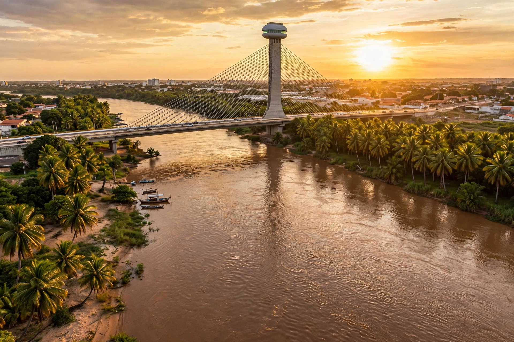

| Native name | Rio Parnaíba (Portuguese) |
|---|---|
| Source | Chapada das Mangabeiras, southern Piauí |
| Mouth | Atlantic Ocean, Parnaíba Delta (between Piauí and Maranhão) |
| Length | ~1,400 km (870 mi) |
| Main tributaries | Balsas, Gurguéia, Canindé, Poti, Longá |
| States | Piauí, Maranhão, Bahia (headwaters region) |
The Parnaíba River (Portuguese: Rio Parnaíba) is one of the longest rivers of northeastern Brazil, flowing roughly 1,400 km from the Chapada das Mangabeiras in the far south of Piauí northward to the Atlantic Ocean. For nearly its whole course it forms the boundary between the states of Piauí (east bank) and Maranhão (west bank) — the only major river in Brazil that serves as a state border for almost its entire length.
The Parnaíba rises from springs in the Chapada das Mangabeiras near the tri-border of Piauí, Bahia, and Tocantins, at about 700 m elevation, in a region of cerrado and veredas (palm swamps). Gathering tributaries such as the Gurguéia and the Canindé — the latter draining the semi-arid southeastern sertão — it flows north past Uruçuí through increasingly developed soy country, then past Floriano and the state capital Teresina, where it receives the Poti River. Below Teresina the river widens and slows, becoming navigable in stretches historically used by steamboats; its longest tributary, the Balsas, joins from the Maranhão side to the south. Near its mouth the river divides into a maze of channels around some 70 islands, forming the Parnaíba Delta between the towns of Parnaíba and the Lençóis region of Maranhão.
The Parnaíba Delta is frequently described as the only river delta in the Americas that opens directly onto the ocean — its maze of igarapés, mangroves, dunes, and freshwater lagoons covering about 2,700 km² within the Parnaíba Delta Environmental Protection Area. It is a major ecotourism destination, noted for the evening flight of scarlet ibis (guará) returning to roost on Ilha dos Guarás, and for the nearby port city of Parnaíba and the fishing town of Luís Correia on the Piauí coast.
The river's principal impoundment is the Boa Esperança Dam near Guadalupe, whose hydroelectric plant (about 237 MW) regulates flow and supplies the regional grid. River navigation, once central to the cattle-and-carnauba economy of the interior, has largely yielded to highways, but the Parnaíba remains vital for irrigation in the southern agricultural frontier, for artisanal fisheries throughout its course, and as the geographic spine of Piauí — Teresina, alone among northeastern capitals, grew up on its banks rather than on the sea.